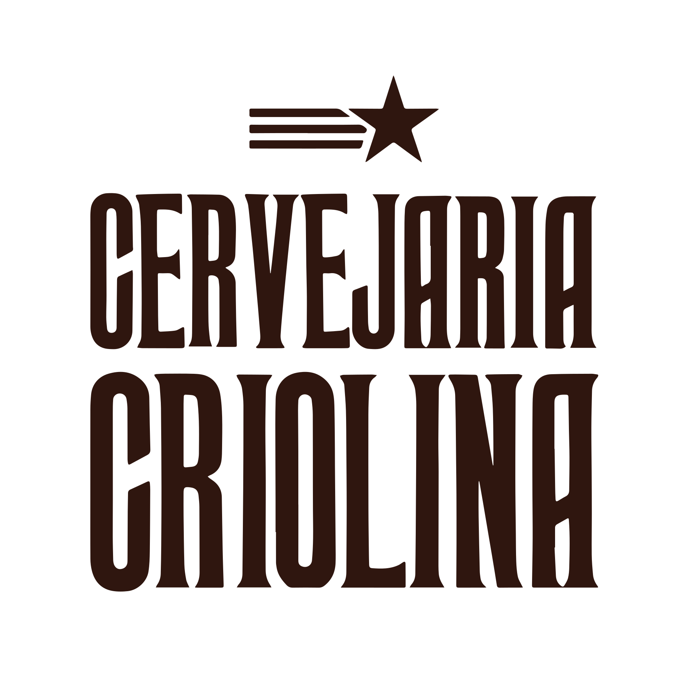

<style>
    footer{
    width:100%;
background-color:#ffc100;
   padding:15px;


    }

    .lista_footer{
    margin-top:5px;
    }

    .lista_footer a{
    color:#2f160f;}

    .sub{
    font-size:11px;
    color:#2f160f;
    font-weight:300;
    margin-block-start: 0em;
    margin-block-end: 0em;
    margin-inline-start: 0px;
    margin-inline-end: 0px;
    }

    .sub-item{
    font-size:12px;
    color:#2f160f;
    font-weight:500;

    }

    .flex{
    display:flex;
      justify-content: center;
  align-items: center;
}
    .list-item{
     margin:0 auto;
    }
 ul{
      list-style-type: none;
      }
</style>
    </body>
<footer>
    <div class="bottomfooter container">
        <div class="center flex">
            <div class="col-md-2">
                <a href="#">
                    
                </a>
            </div>
            <div class="col-md-8 lista_footer">
                <div class="text-center">
                    <p class="sub">ENCONTRE-NOS AQUI!</p>
                    <a class="sub-item" href="https://www.google.com/maps/search/?api=1&query=Cervejaria%20Criolina%2C%20DF&query_place_id=ChIJv-9OzjUwWpMRGlxc_qNkv3A">SOF Sul Quadra 1 conjunto B lt. 6, 71215-235 Brasília, Brazil</a>
                </div>
            </div>
        </div>
    </div>
<!--        <div class="row">-->
<!--            <div class="col-md-12 text-center">-->
<!--                <p class="sub">@2020 betabase | Todos os direitos reservados. Construido por <a href="#">Rafael Axé</a></p>-->
<!--            </div>-->
<!--        </div>-->


    <!-- Optional JavaScript -->
    <!-- jQuery first, then Popper.js, then Bootstrap JS -->
    <script src="https://code.jquery.com/jquery-3.4.1.slim.min.js" integrity="sha384-J6qa4849blE2+poT4WnyKhv5vZF5SrPo0iEjwBvKU7imGFAV0wwj1yYfoRSJoZ+n" crossorigin="anonymous"></script>
    <script src="https://cdn.jsdelivr.net/npm/popper.js@1.16.0/dist/umd/popper.min.js" integrity="sha384-Q6E9RHvbIyZFJoft+2mJbHaEWldlvI9IOYy5n3zV9zzTtmI3UksdQRVvoxMfooAo" crossorigin="anonymous"></script>
    <script src="https://stackpath.bootstrapcdn.com/bootstrap/4.4.1/js/bootstrap.min.js" integrity="sha384-wfSDF2E50Y2D1uUdj0O3uMBJnjuUD4Ih7YwaYd1iqfktj0Uod8GCExl3Og8ifwB6" crossorigin="anonymous"></script>
<script>
             $(function () {
  $('[data-toggle="tooltip"]').tooltip()
})


    $('#direct_pedidos').click(function(){
document.getElementById('nav-pedidos-tab').click();
})

$('#direct_msg').click(function(){
document.getElementById('nav-opnioes-tab').click();
})

$('#direct_perfil').click(function(){
document.getElementById('nav-configuracao-tab').click();
})

$('#direct_pontos').click(function(){
document.getElementById('nav-configuracao-tab').click();
})

</script>

</footer>

</html>